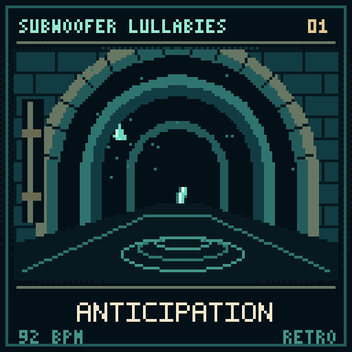
01 / Anticipation
Blim's suspended curiosity before entering the unknown.
Editable source 128px native 2048px PNG
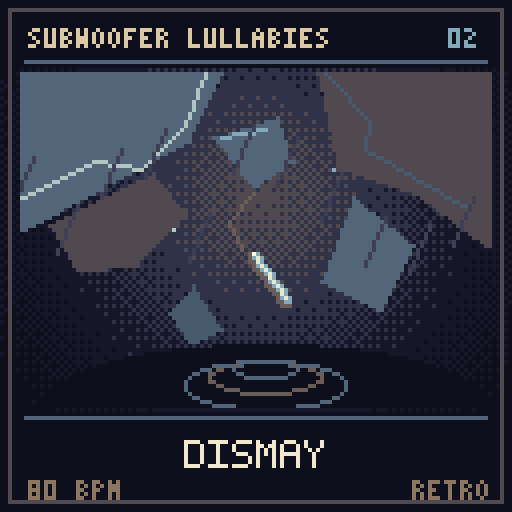
02 / Dismay
An ordinary walk breaks into shock, disorientation and fragile survival.
Editable source 128px native 2048px PNG
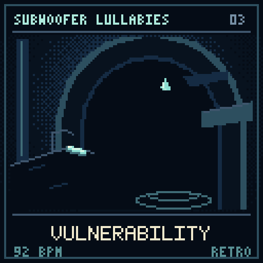
03 / Vulnerability
Small and alone, Blim learns to trust a path revealed by a fading light.
Editable source 128px native 2048px PNG
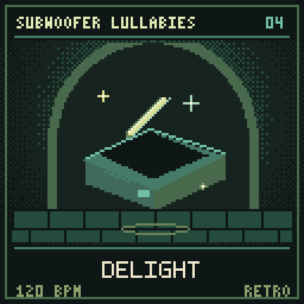
04 / Delight
A small, useful discovery brings a moment of satisfaction rather than victory.
Editable source 128px native 2048px PNG
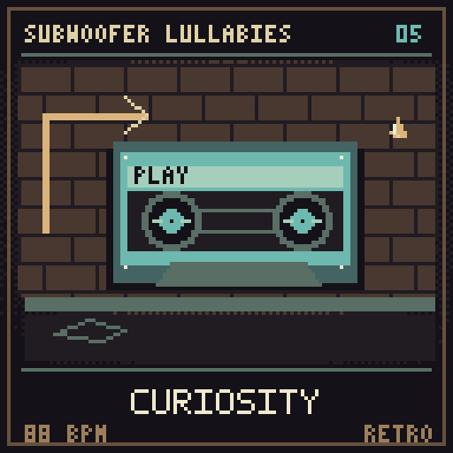
05 / Curiosity
Wrappers, arrows and a recorded voice make Blim wonder who travelled here first.
Editable source 128px native 2048px PNG
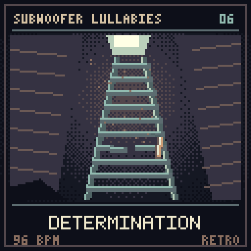
06 / Determination
Repeated effort and wrong turns become Blim's decision to continue upward.
Editable source 128px native 2048px PNG
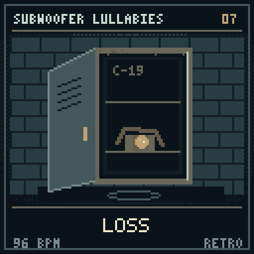
07 / Loss
The waiting headlamp makes an unreturned promise real to Blim.
Editable source 128px native 2048px PNG
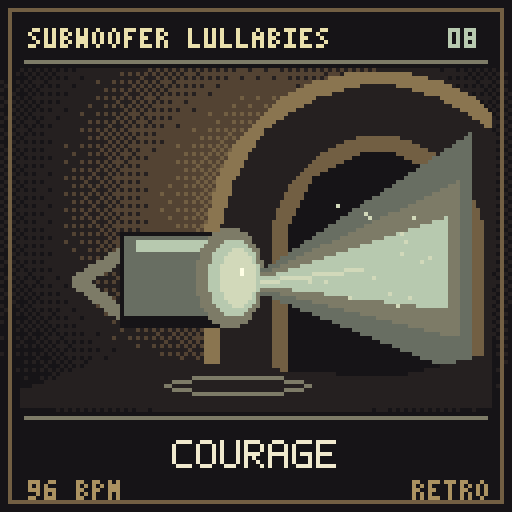
08 / Courage
The earlier upgrade sketch imagines a little more confidence, not complete safety.
Editable source 128px native 2048px PNG
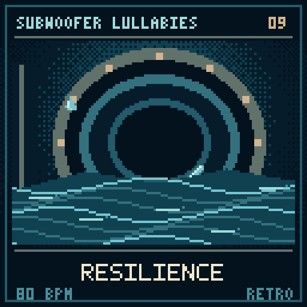
09 / Resilience
Against moving water and machinery, Blim's persistence grows quieter rather than louder.
Editable source 128px native 2048px PNG
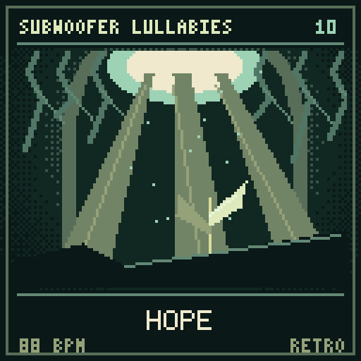
10 / Hope
Roots, fresh air and light turn the possibility of escape into something tangible.
Editable source 128px native 2048px PNG
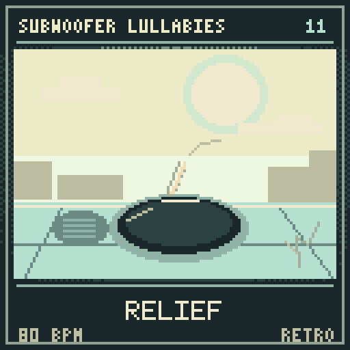
11 / Relief
Blim reaches ordinary daylight and completes a climb the unseen Guide could not.
Editable source 128px native 2048px PNG
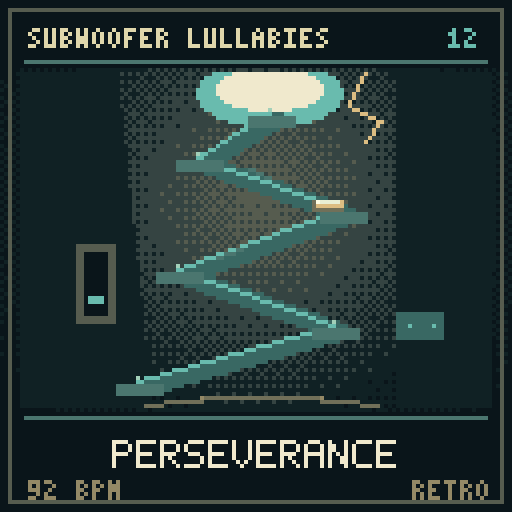
12 / Perseverance
Blim carries uncertainty, human traces and loss through the whole journey toward daylight.
Editable source 128px native 2048px PNG
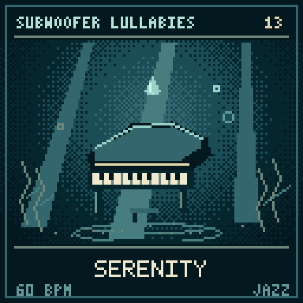
13 / Serenity
The same journey is held in stillness, with space to rest between small gestures.
Editable source 128px native 2048px PNG
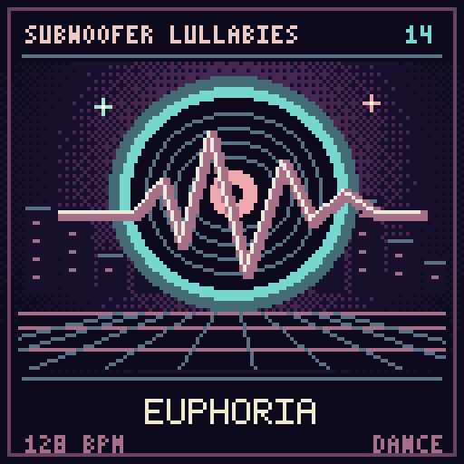
14 / Euphoria
Buoyant dance-floor energy; independent of the game story.
Editable source 128px native 2048px PNG